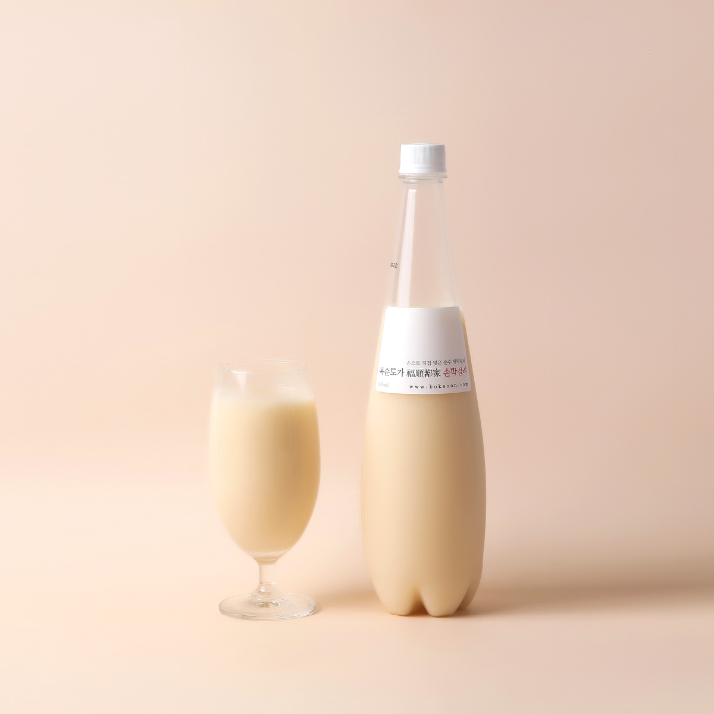
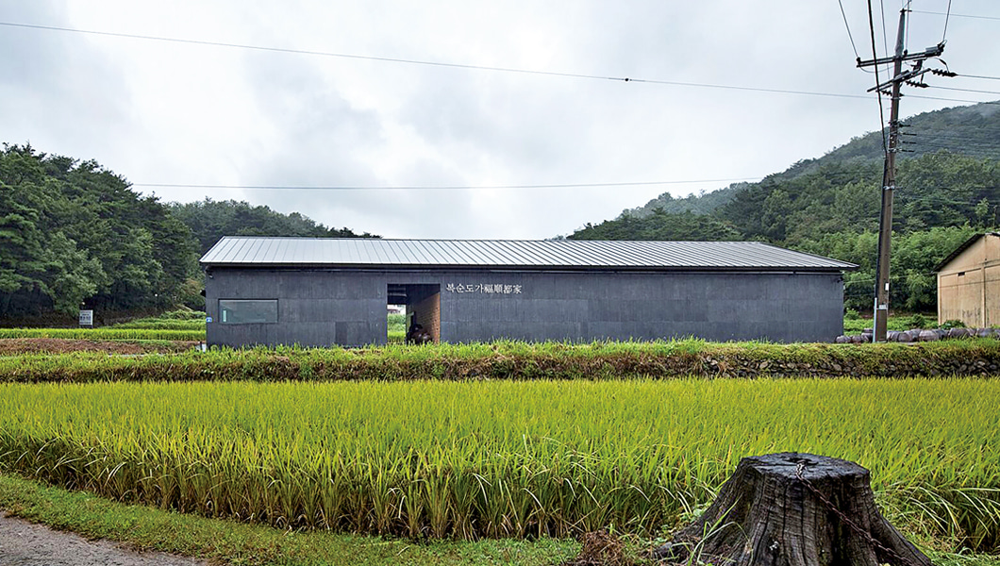
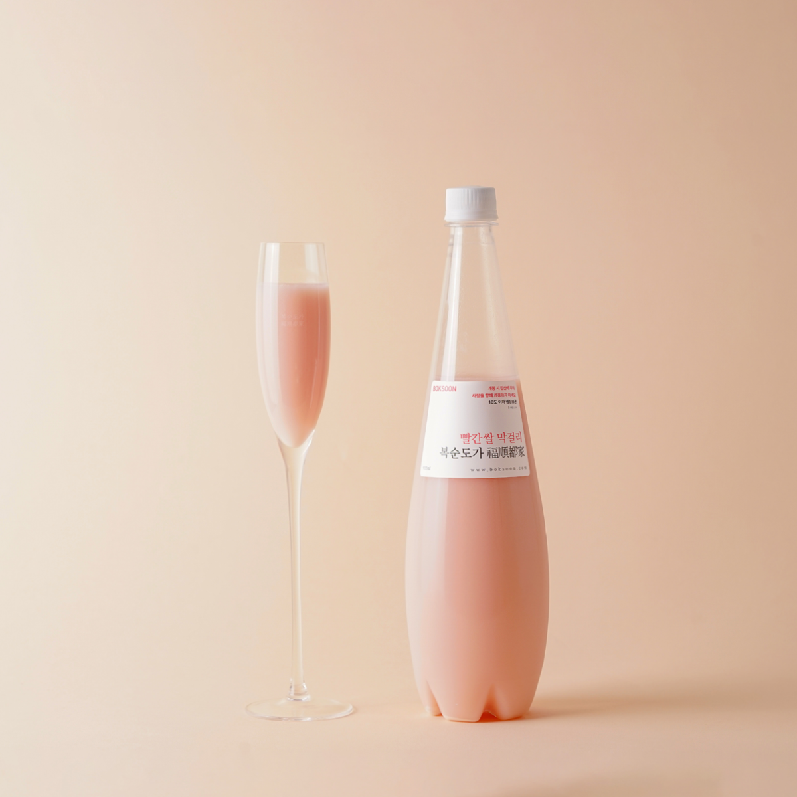
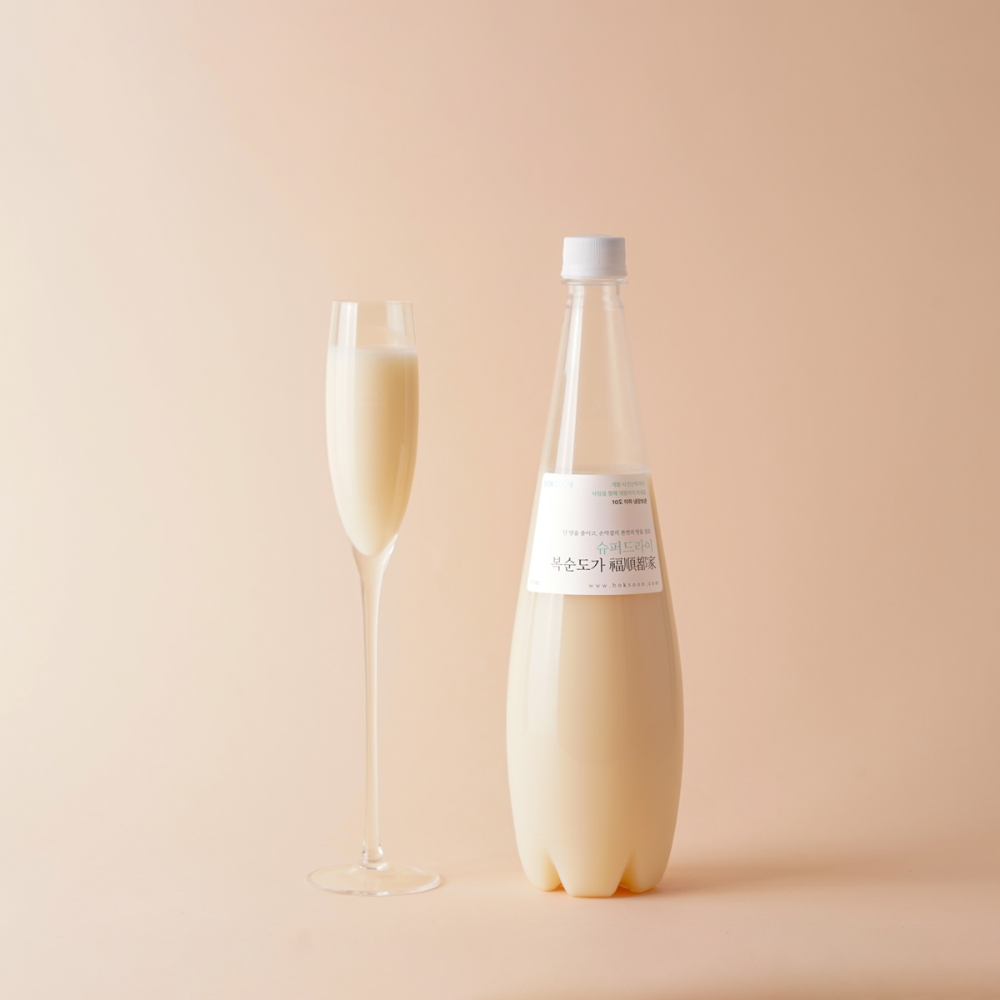
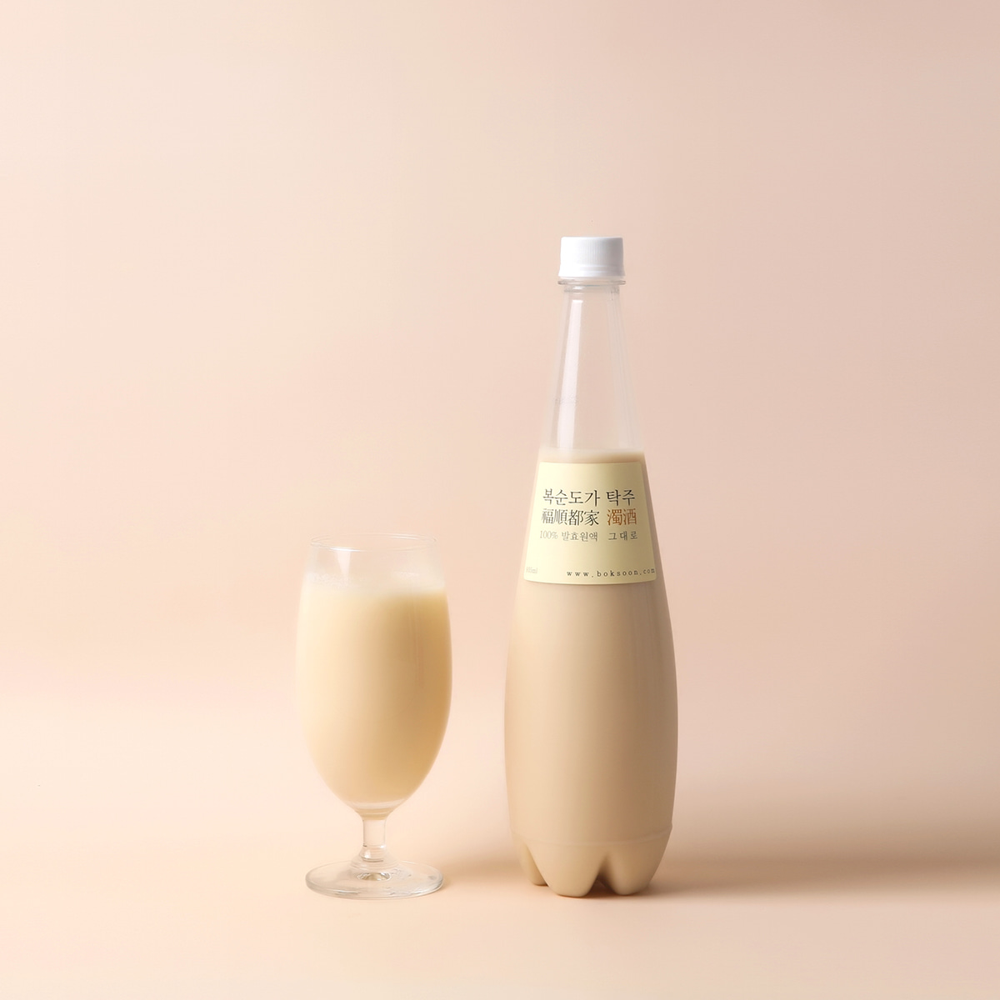
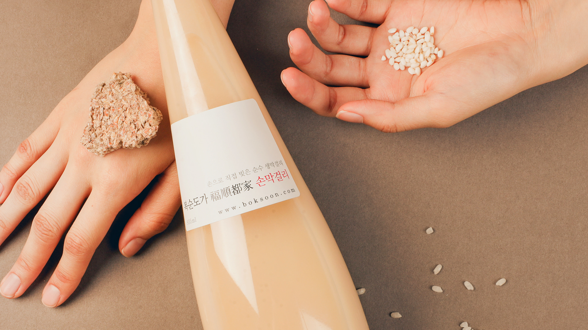
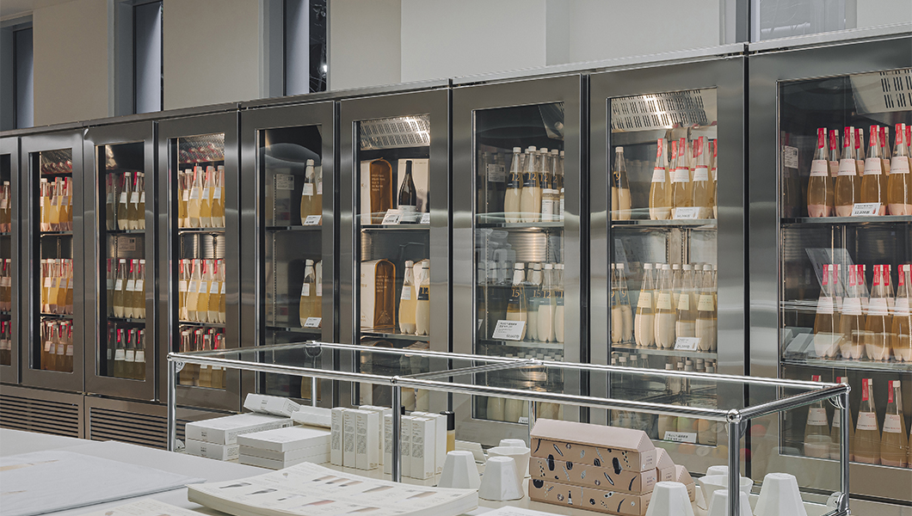
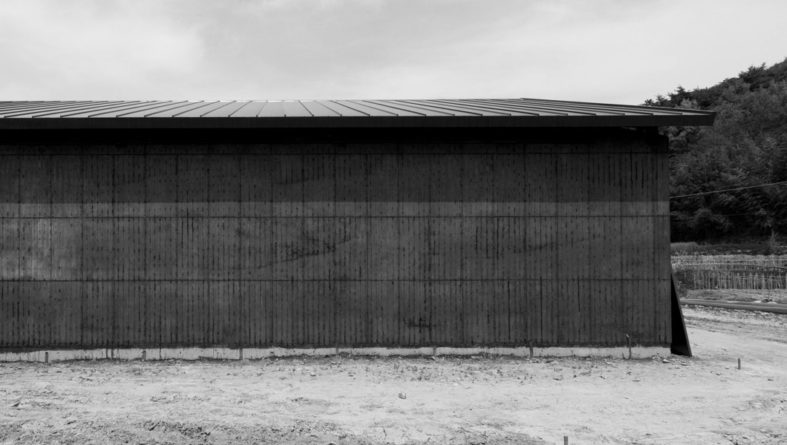
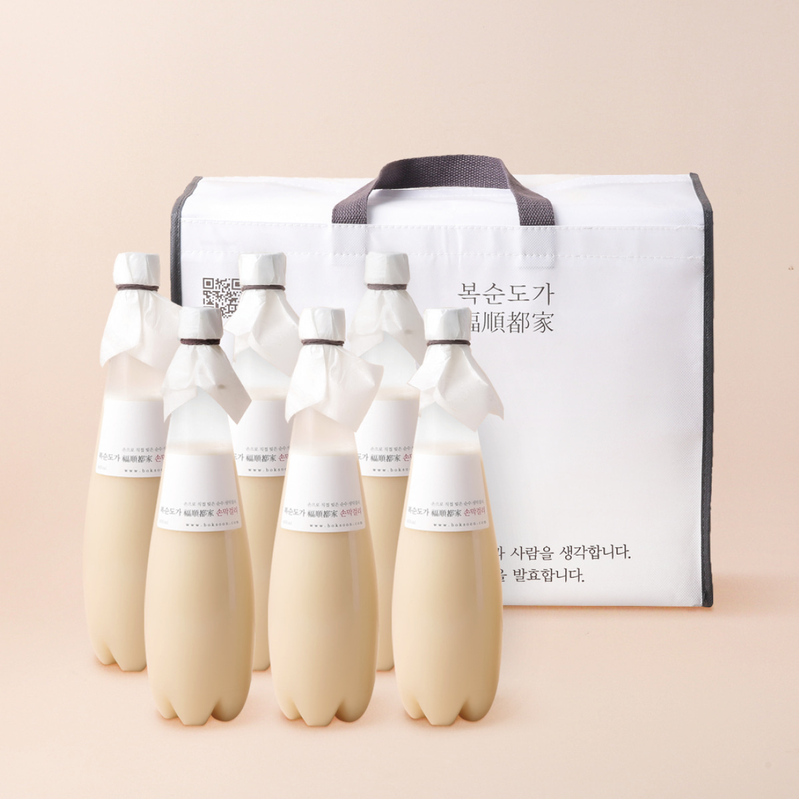

복순도가
통합 마케팅 계획
옹기에서 25일을 기다려 빚는 울산 울주의 프리미엄 막걸리,
그 자산을 소비자의 식탁까지 잇는 IMC 전략을 제안합니다

발표 순서
강의계획서의 보고서 구성을 따라 다섯 부분으로 진행합니다
프로젝트 소개

울산 울주군 상북면 — 복순도가 양조장 (사진: 복순도가 공식 사이트)농업회사법인 복순도가
어머니의 가양주에서 출발해 발효 라이프스타일 컴퍼니를 향해 가는 울산 울주의 전통주 기업입니다

빨간쌀 막걸리 — 복순도가 공식 제품 이미지모방하기 어려운 네 가지 자산
제품 공정부터 공간, 유통망까지 — 경쟁사가 따라오기 어려운 자산을 이미 갖추고 있습니다
자사몰 기준 9종 라인업
시그니처 손막걸리부터 과하주까지 — 기능과 성분으로 차별화된 포트폴리오 (약주·과하주 등 상위 라인은 최고 90,000원)


3년 사이 매출과 이익이 함께 꺾였습니다
연 매출 101억 원의 강소기업이 2년 만에 영업이익 6분의 1 수준으로 내려앉았습니다
광고비를 3.5배 늘렸지만 매출은 줄었습니다
無마케팅 철학을 접고 2024년부터 광고비를 키웠지만, 매출 방어에 실패했습니다 — 대조군 하이트진로는 정반대로 움직였습니다
전통주 시장은 2022년 정점을 지났습니다
출고금액이 2년 연속 줄어드는 사이, 소비는 저도수 · 소용량 · 믹스 음용 중심으로 이동하고 있습니다
SWOT — 자산은 강하고, 전달이 약합니다
- 옹기 25~30일 전통 천연 발효 공법과 독보적 천연 탄산
- 국가 의전 건배주 3회의 신뢰 자산
- '발효건축' 양조장의 공간 관광 자원화 — 주말 평균 2,000명
- 자사몰 + KTX 역내 직영 매장 6개의 D2C 유통망 선확보
- 자본구조 취약성과 프로모션 전문 인력 부족
- 수작업 중심 공정 — 대량 생산 확장의 제약
- 짧은 유통기한과 해외 콜드체인 물류비 부담
- 대중 막걸리 대비 6배 가격 장벽 · 합성감미료(아스파탐) 논란
- K-푸드 확산 — 해외 프리미엄 한국 주류 수요는 확대
- 헬시플레저·무알코올·저당 흐름과 맞는 천연 발효 포지션
- 경험·희소성 중심 소비 — 양조장 관광·지역 한정 자산과 결합
- 울산 HD FC 협업(문수탁주) 등 울산 기반 로컬 연계
- 장수·지평 등 대형 브랜드의 프리미엄 라인 강화
- 느린마을의 7개 이커머스 판매 1위 — 후발 주자의 추격
- 1~2만 원대 가격 — 중저가 와인·사케와 직접 경쟁
- 탁주 수출 정체와 주류 소비 인구 감소
마케팅 현황

국산 쌀과 수작업 공정 (사진: 복순도가 공식 사이트)시장은 가격과 관여도로 나뉩니다
프리미엄 주류 시장은 가격 3구간과 소비 성향 2유형으로 세분화됩니다
30~50대 미식 라이프스타일러가 중심입니다
가격 대비 탁월한 미식 경험과 가치 소비를 지향하는 고소득층을 메인으로, 두 그룹을 서브로 둡니다
미식 라이프스타일러
- 외교 · 정부 의전 수요 — 국빈 행사와 공식 만찬의 건배주 수요
- 와인 평론가 · 미식 미디어 관여층 — 페어링 담론을 만드는 사람들
- 양조장을 직접 찾는 미식 관광객 — 주말 2,000명의 방문 수요
K-푸드 확산과 함께 자라는 해외 프리미엄 한국 주류 수요 — 해외 B2B 한식당 유통의 출발점
국빈 만찬 이력이 보증하는 품격 — 기업 선물과 명절 수요를 흡수하는 세그먼트
프리미엄 가격 × 페어링 전문성의 독점 영역
막걸리계의 돔 페리뇽
제품 5단계 모델로 본 복순도가
코틀러의 Five Product Levels — 확장 단계의 자산이 강하고, 잠재 단계의 확장 여지가 큽니다
미식과 격식 있는 자리를 완성하는 고급 발효주 경험
비살균 생막걸리 카테고리 고유의 물리적 실체
935ml · 6.5도 규격과 천연 탄산의 부드러운 청량감
옹기 25일 발효의 스토리텔링 · 국빈 만찬 인증 · 건축학적 공간 경험
발효 코스메틱 · 유산균 헬스케어 · 글로벌 다이닝 프랜차이즈
전통주 시장 최상단의 가치 기반 가격
제조 원가 가산이 아닌, 하이엔드 와인·사케의 준거가격 체계를 벤치마킹한 가격 구조입니다
자사몰과 KTX 직영이 이끄는 수직 유통
직영 중심의 수직적 마케팅 시스템(VMS) — 채널 간 갈등은 적지만, 채널별 차별화가 없습니다

KTX 역사 직영 매장의 냉장 쇼케이스 (사진: 복순도가 공식 사이트)자사몰(boksoon.com) + KTX 직영 매장 6개 역 — 서울 · 오송 · 대전 · 동대구 · 울산 · 부산(1·2층)
일부 프리미엄 백화점과 오프라인 편의점(CU 일부 점포)에 제한적으로 입점
일본 일부 편의점·백화점, 홍콩 · 싱가포르 등 미식 도시로 직접 수출하는 혼합형 유통
대중 도매상 마진 구조와 거리를 둔 직영 중심 — 수평적 채널 갈등 최소화
무광고 철학 이후, 전략 없는 지출이 이어졌습니다
성장을 가로막는 네 가지 문제
브랜드 인지의 대부분이 인플루언서·지인 추천에서 발생 — 자체 디지털 채널 유입은 미미하고 공식 SNS의 팔로워·참여 지표는 정체 상태
의전 이력, 발효건축 공간 같은 자산이 하나의 메시지로 통합되지 못하고 개별 제품 홍보에 머묾 — 발효 코스메틱과의 연결도 작동하지 않음
천연 탄산 개봉에 4~5분의 뚜껑 제어가 필요하고 넘침 위험이 있음 — 12,000원 · 935ml 단일 구성은 1인 가구와 라이트 유저의 진입을 차단
어느 채널에서나 같은 제품 — KTX 역사에서 구매할 명분이 부족하고, 관광객의 지역 한정 기념품 수요를 공략하지 못함
마케팅 전략 제안

발효건축 — 흙·볏짚·누룩으로 지은 양조장 (사진: 복순도가 공식 사이트)옹기, 25일의 기다림
창업주 박복순 여사의 옹기 발효 장인 정신과 김민규 대표의 발효건축 이야기를 하나의 메시지로 모읍니다.
모든 캠페인 · 채널 · 챌린지가 이 메시지 아래에서 움직이고, 카테고리는 '프리미엄 다이닝 페어링 주류'로 다시 자리 잡습니다
감성 캠페인 시리즈 세 편
일관성 · 명확성 · 호소력을 갖춘 다큐멘터리와 참여형 콘텐츠로, 소비자 접점 전반에 같은 메시지를 흐르게 합니다
유튜브가 깊이를, 인스타그램이 확산을 맡습니다
중소기업 예산(매출액 3~5% 이내)에서 도달을 최대로 끌어올리는 당김(Pull) 커뮤니케이션 조합입니다
소비자가 콘텐츠를 만드는 챌린지 두 가지
일방적 메시지 수용을 넘어, 국민 참여형 챌린지의 문법으로 기업과 소비자의 유대를 만듭니다
역마다 다른 복순도가를 만듭니다
이미 확보한 KTX 6개 역 직영망에 그 지역에서만 살 수 있는 제품을 더해, 채널 동질화 문제를 풀어냅니다
리스크 분석과 결론

손막걸리 선물 세트 (사진: 복순도가 자사몰)전략 적용 시 리스크와 대응 방안
진입 장벽을 낮추는 과정에서 하이엔드 의전 주류의 희소성이 훼손될 위험 — 아스파탐에 민감한 고관여 헤비 유저의 반발 가능성
진입 라인은 문수탁주 기반 콜라보 제품으로 한정해 시그니처 935ml의 격을 보존 — 최상위 Collectible 빈티지 라인은 무감미료 순수 가양주 공법으로 운영
중소기업 특성상 디지털 캠페인을 상시 운영할 전문 인력과 전담 부서가 부족 — 일회성 이벤트로 끝날 위험
대형 대행사 대신 울산창조경제혁신센터 보육 프로그램과 UNIST 산학 협력을 연계한 저비용 전담 서포터즈 기획단으로 인력 공백을 보완
편의점 확대와 정기구독 도입 시 전국 단위 냉장 유통이 필요해져 물류비 폭증과 신선도 저하 위험
초기에는 서울 도심권과 KTX 거점 대도시 100개 지점 중심으로 출시 범위를 통제해 물류 부담을 선제적으로 관리
제안이 만드는 세 가지 변화
중소기업 예산 범위 안에서, 브랜드 인식 · 소비 경험 · 고객 관계가 함께 움직입니다
결론
참고문헌
- 크레탑(CRETOP). (2026). 복순도가 · 하이트진로 재무제표 조회 자료
- 한국농수산식품유통공사. (2025). 2025년도 주류산업정보 실태조사
- Kotler, P., Keller, K. L., & Chernev, A. (2025). Marketing Management (17th ed.). Pearson
- 복순도가 공식 사이트. boksoondoga.com — 제품 · 가격 · 공간 안내 (2026. 6. 확인)
- Forbes Korea. 복순도가 김민규 대표 인터뷰 — 옹기 발효 공정 · 양조장 방문객
- 한국경제. 김익환이 만난 혁신 기업가(2) 김민규 복순도가 공동대표
- 매일경제 외. 美 유학파 건축가가 양조장 주인 된 사연 — 창업 스토리 인터뷰
- 아레나옴므플러스 외. 막걸리계의 돔페리뇽 — 복순도가 김민규 대표 인터뷰
- 중앙이코노미뉴스. (2024). 배상면주가 느린마을 막걸리, 7개 이커머스 판매 1위 석권
- 문화일보 외. (2026). K리그 울산 HD FC × 복순도가 '문수탁주' 협업 보도
- TIM504 Marketing 보고서. (2026). 복순도가(福順都家) 마케팅 전략 보고서 — Group 5